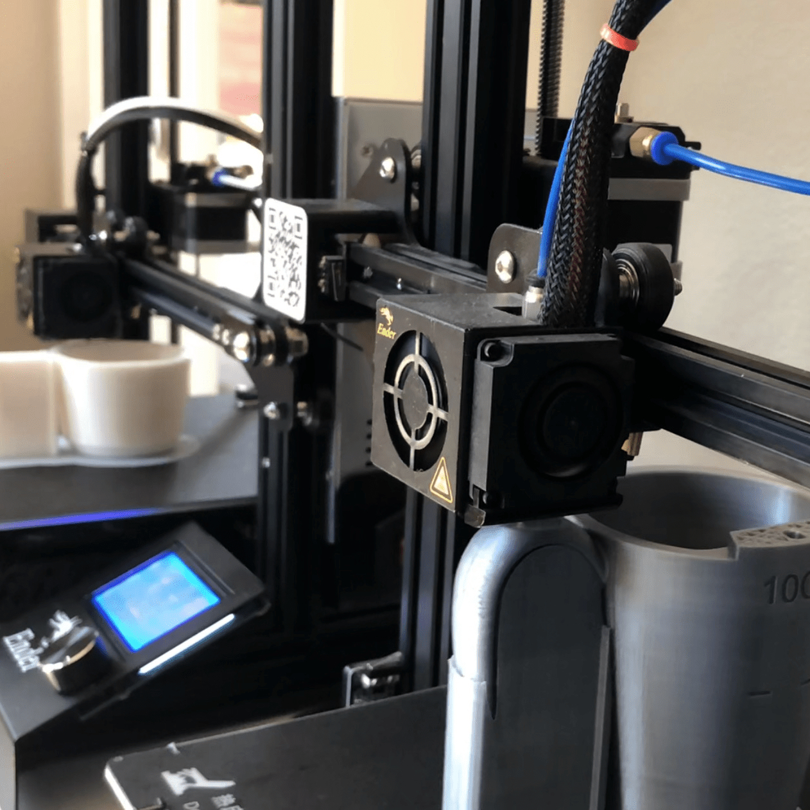
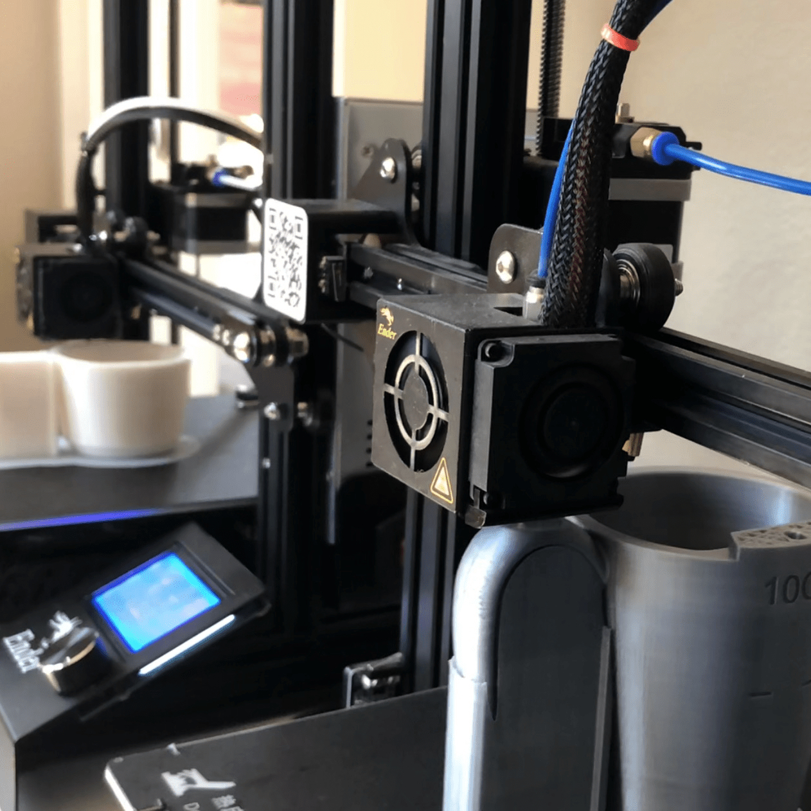

Medical Device - Arch Day Design
This is a project I worked on with engineering consulting company in Ventura, CA. The company does mostly medical device design for industry clients. This was my first experience with this type of engineering, and since then I have been very interested in working on designing to improve human lives.
 



Background
Arch Day Design hired me to work as a manufacturing and quality engineer for their regulated medical device project. The product was a cup for people with disabilities that impacted swallowing liquids. The cup would dispense a set amount of liquid, usually 5 or 10cc. This was a redesign for a company that has a similar product, but wanted an updated model that would allow users to be less self-conscious about needing the device by disguising the internal workings. By hiring me, Arch Day was able to save their client thousands of dollars, as I was capable of providing the necessary 3D printed models at a fraction of the price that Arch Day could.
Design
While I was not in a lead design role for this project, I suggested changes for ease of manufacturing, which, at the time, was FDM 3D printing. I worked with the owner of Arch Day on positioning of the handle, as well as debossing the text on the lid, and others.
Manufacturing
As the head of manufacturing during the prototyping phase, I was in charge
of 3D printing all of our models and helping ship them across the US to the
rest of the team. I worked with my two personal FDM 3D printers to quickly
turn around the models, running my printers constantly. With every variation,
I optimized the slicing process to improve print speed, quality, and
impermeability. Each model was printed in two parts, the lid and the cup,
with each of these prints requiring custom supports to be feasibly printed.
This project, and working for Arch Day, was the single most educational
engineering experience I had up to that point. It greatly furthered my
understanding of design and manufacturing, and improved my CAD, slicing, and
3D printing skills. Most importantly, I felt good knowing that my work was a
direct factor in helping people.